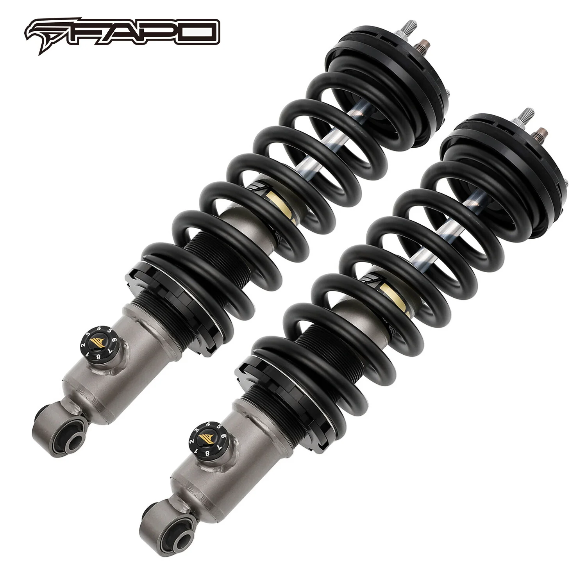

1 / 14FAPO 8-Stage Front 2.5-3.5 in Lift Struts ForNissan Frontier 2005-2022 PA192131
Lista pakowania: Regulowana wysokość podnoszenia 2,5–3,5 cala 2× Przednie rozpórki gwintowane FAPO P3 Charakterystyka przedmiotu: 8-stopniowa regulacja tłumienia Projekt konstrukcji dwururowej P3 Chromowane, hartowane tłoczysko Tuleja gumowa odporna na zimno Rozwiązanie do transportu ciężkich ładunków terenowych Wymiary: Długość produktu (rozszerzona): 17,95 cala Długość produktu (złożony): 13,03 cala Długość podróż…
Packing List: Adjustable 2.5–3.5" Lift Height 2× FAPO P3 Front Coilover Struts Item Specifics: 8-Stage Adjustable Damping P3 Twin-Tube Structure Design Chromed Hardened Piston Rod Cold-Resistant Rubber Bushing Off-Road Heavy Load Solution Dimensions: Item Length (Extended): 17.95" Item Length (Collapsed): 13.03" Travel Length: 4.92" Shock Rod Diameter: 0.71" Piston Diameter: 1.42" Tube Diameter: 2.28" Compatibility: Nissan Frontier 2005-2022
2199,99 PLN
Opis produktu
Lista pakowania:
Regulowana wysokość podnoszenia 2,5–3,5 cala
- 2× Przednie rozpórki gwintowane FAPO P3
Charakterystyka przedmiotu:
- 8-stopniowa regulacja tłumienia
- Projekt konstrukcji dwururowej P3
- Chromowane, hartowane tłoczysko
- Tuleja gumowa odporna na zimno
- Rozwiązanie do transportu ciężkich ładunków terenowych
Wymiary:
- Długość produktu (rozszerzona): 17,95 cala
- Długość produktu (złożony): 13,03 cala
- Długość podróży: 4,92"
- Średnica pręta amortyzującego: 0,71 cala
- Średnica tłoka: 1,42"
- Średnica rury: 2,28"
Zgodność:
- Nissan Frontier 2005-2022
Packing List:
Adjustable 2.5–3.5" Lift Height
- 2× FAPO P3 Front Coilover Struts
Item Specifics:
- 8-Stage Adjustable Damping
- P3 Twin-Tube Structure Design
- Chromed Hardened Piston Rod
- Cold-Resistant Rubber Bushing
- Off-Road Heavy Load Solution
Dimensions:
- Item Length (Extended): 17.95"
- Item Length (Collapsed): 13.03"
- Travel Length: 4.92"
- Shock Rod Diameter: 0.71"
- Piston Diameter: 1.42"
- Tube Diameter: 2.28"
Compatibility:
- Nissan Frontier 2005-2022
FAPO Polska
Ten produkt obsługujemy lokalnie
Autoryzowana obsługa
FAPO Polska prowadzi katalog, kontakt i zamówienia bez odsyłania klienta do zewnętrznych sklepów.
Dobór po aucie
Sprawdzamy dopasowanie produktu do pojazdu, rocznika i wersji przed finalizacją zamówienia.
Wsparcie po zakupie
Masz kontakt w Polsce w sprawach zamówień, wysyłki, gwarancji i zwrotów.